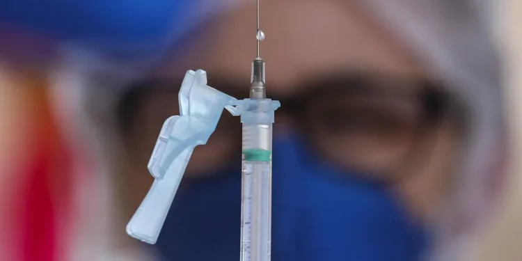

Anvisa aprova vacina que amplia proteção e pode prevenir até 3 tipos de câncer
Saúde | 14/02/2026

A Anvisa aprovou uma nova indicação para a vacina nonavalente contra o HPV. A decisão permite que crianças e adultos entre 9 e 45 anos recebam uma proteção ampliada contra nove tipos do vírus.
Essa medida representa um avanço significativo na prevenção de cânceres associados ao HPV, como os de colo do útero e orofaringe. A vacina já está disponível na rede privada, e há discussões para sua inclusão no Sistema Único de Saúde.
A vacina nonavalente aprovada cobre os tipos de HPV 6, 11, 16, 18, 31, 33, 45, 52 e 58, oferecendo uma proteção abrangente. Enquanto isso, a vacina quadrivalente segue disponível gratuitamente pelo Programa Nacional de Imunizações para meninos e meninas de 9 a 14 anos.
Desafios no acesso
O custo da vacina nonavalente, que chega a R$ 800 por dose no setor privado, limita o acesso. A expectativa é que políticas públicas sejam desenvolvidas para facilitar sua inclusão no sistema público e aumentar a cobertura vacinal.
A vacinação atual está aquém da meta, com 82% das meninas e 67% dos meninos na faixa etária de 9 a 14 anos recebendo a vacina até 2024. Melhorar esses índices é um desafio, dado que a meta global é de 90%.
Avanços
Com a nova aprovação, o Brasil avança na proteção contra doenças relacionadas ao HPV. A incorporação de tipos adicionais do vírus na vacina reflete um compromisso contínuo com a saúde pública.
Ao mesmo tempo, permanece o debate sobre integrar a vacina nonavalente ao SUS, ampliando o acesso. Apesar das conversas contínuas, ainda não há uma previsão oficial para a inclusão do imunizante no programa público de imunização.